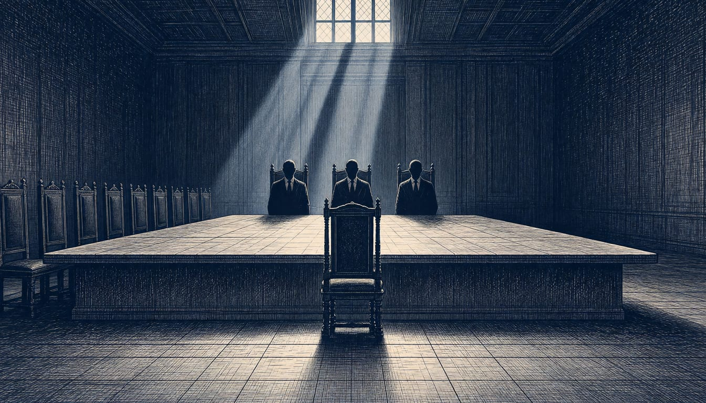

EU leaders to debate single envoy for Ukraine talks as Kushner presses Europe
Kushner said on 11 November that Europe should name one representative, and the question now goes to the informal summit in Dublin this week. Some capitals resist Kallas as too critical of Russia to sit across the table.
Correction: An earlier version called Kristen Michal Estonia's foreign minister. He is Estonia's prime minister.

Jared Kushner, the US envoy and Donald Trump's son-in-law, said on 11 November that Europe should designate a single person to speak in its name. He added that this would be an even greater success than convincing the Russians to include Europe in the negotiations. Estonian Prime Minister Kristen Michal answered that Europe has already chosen them. Council President António Costa and High Representative Kaja Kallas, he said, are both clearly accountable to EU countries.
The absence of a single European voice showed in Abu Dhabi this week. Russia, the US and Ukraine met there in three-way talks, with the EU present only through senior civil servants in a separate, wider meeting, Politico reports. Kushner and Steve Witkoff want this round to be the last without Europe's full participation, and are pushing the talks to that end.
At Meloni's request, the question of who speaks for Europe is on the agenda of an informal summit in Dublin at the end of this week. Costa answered that "the interests of the European Union must be represented by its institutions, in accordance with the Treaties". Politico reads that as a hint he wants the job himself.
The choice of person divides the capitals. Michal dismissed taking Putin's preferences into account: "If Russians don't like it, too bad," he said. He argued that Costa and Kallas' mandate comes directly from the Council, so no ad hoc plan between member states is needed. Yet some capitals oppose Kallas as the envoy, judging her too strong a critic of Russia and Putin to sit across the table from them.
An EU source said the discussion is an initial debate on the structure and mandate of the role. Individual candidates would be nominated at the next summit, in December, according to the source. Witkoff and Kushner want to accelerate the negotiating process, potentially leaving European governments and EU institutions limited time to agree on their representation.